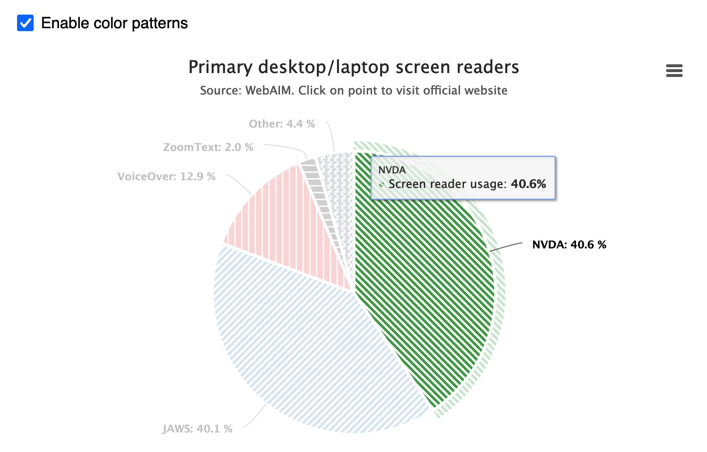
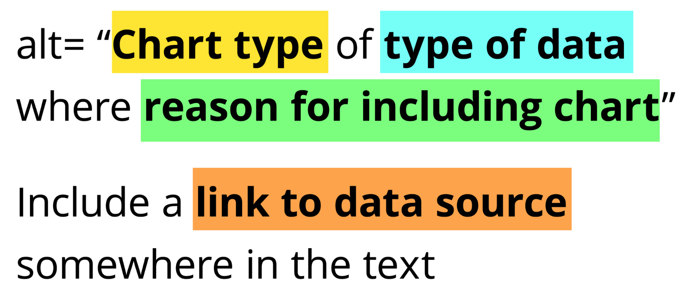
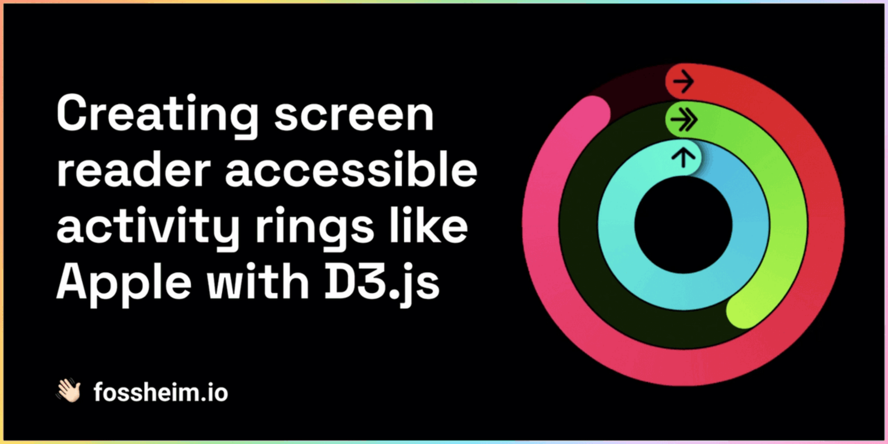
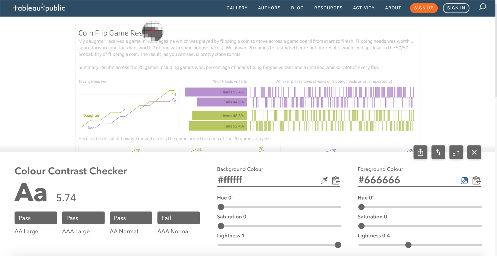
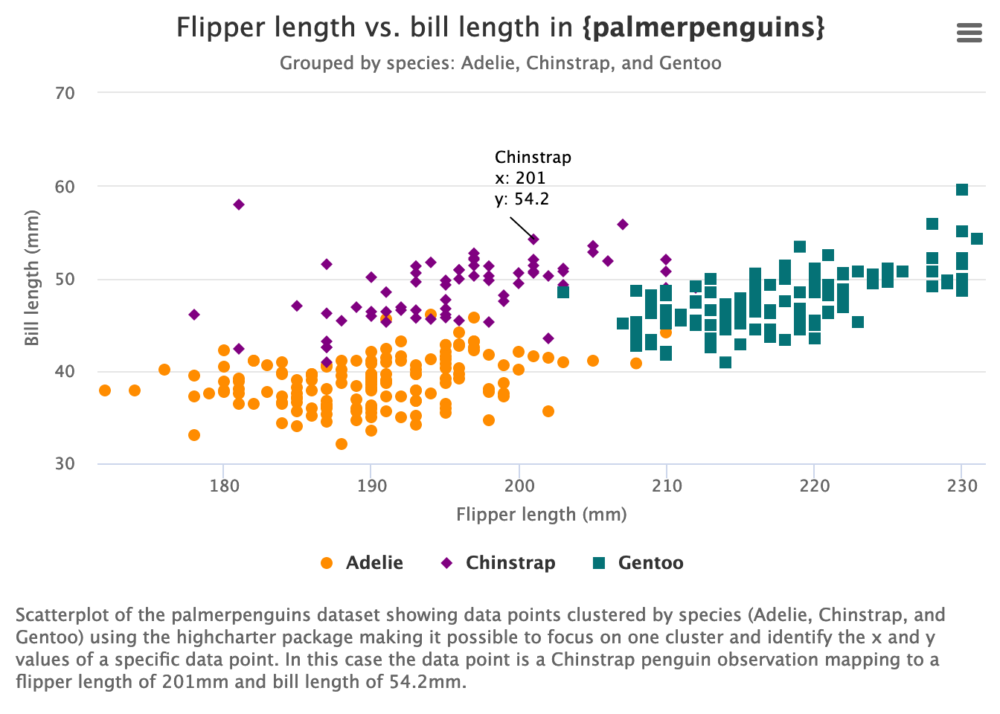

Resources for Data Viz Accessibility
A selection of general and R-specific resources on how and why to make accessible data visualizations.
By Silvia Canelón in Education
September 23, 2021
Updated on 2021-11-19 to include a link to a series of educational blog posts written by Mara Averick that cover {highcharter} and the accessibility module in detail. Thank you Mara!
General resources
-
Note: There is an extensive list of data viz accessibility resources at https://github.com/dataviza11y/resources/blob/main/README.md
-
Article by Doug Schepers that provides great background on data viz accessibility, explains how data visualization itself is assistive technology, and offers considerations for a variety of readers: Why Accessibility Is at the Heart of Data Visualization
-
The Chartability methodology helps data viz practitioners audit their data viz, and it’s language/tool-agnostic. Chartability was created by Frank Elavsky with input from the broader community and is the most thorough set of standards I’ve come across.
-
Øystein Moseng provides some basic practices to consider in the post 10 Guidelines for DataViz Accessibility. Among those included are these two which I don’t see covered as often:
-
Do not rely on color alone to convey information. I’ve also heard this referred to as “color independence” and in some cases as “dual-encoding” of information
-
Prefer simple, familiar visualizations over complex novelties.

Pie chart from Øystein’s post using color and (optional) patterns to encode information
-
-
Talk at the Data Visualization Society’s Outlier conference earlier this year, by Frank Elavsky, Larene Le Gassick, and Sarah Fossheim: Are your visualizations excluding people?
-
Guidelines by Amy Cesal on how to write alt text for data visualizations: Writing Alt Text for Data Visualization

Example template from Amy’s post
-
Post by Lisa Charlotte Muth on how to pick colors for your data viz that everyone can appreciate: How to pick more beautiful colors for your data visualizations - Datawrapper Blog

Example from Charlotte’s post of two different approaches to improving a pie chart
-
Post by Gareth Ford Williams from The Readability Group about how to make more informed font choices: A Guide to Understanding What Makes a Typeface Accessible
-
Related is a talk from The Readability Group sharing findings from a survey study about font preferences including 2000+ participants. Among these were participants with dyslexia characteristics and participants with poor near vision: Don’t Believe the Type!
![The fonts selected most often in this group were San Francisco Pro, Red Hat Text, Calibri, and Segoe UI, in that order. San Francisco Pro was selected by 68% of participants The fonts selected least often were Open Dyslexic, Dyslexie, Comic Sans MS, and Sylexiad Sans. Open Dyslexic was selected by 12% of participants. Both Times New Roman and Helvetica are highlighted as showing the largest differences between users with poor near vision and those without. Times New Roman was the 6th least selected and Helvetica was in the middle learning towards the most selected fonts.](img/typeface-poor-near-vision.png)
Bar graph showing the frequency by which 20 different fonts were selected by study participants with strong poor near vision in comparison with users with no poor near vision.
-
-
Sarah Fossheim authored a post titled An intro to designing accessible data visualizations which uses real-word applications to demonstrate 10 different accessibility practices.
Sarah also provides a code-through showing how to make screenreader-friendly graphs using D3.js in their post How to create a screen reader accessible graph like Apple’s with D3.js
 -
Amber Thomas provides an example of how to make scrollytales more accessible in a piece created with Ofunne Amaka for The Pudding: The Naked Truth
I'm excited to release this project for many reasons, but one among them is that I introduced lots of new (to me) #a11y features. My favorite: the ability to turn off scrollytelling 💖 Would love to hear what folks think! pic.twitter.com/eDSQr9RjFe
— Amber Thomas (\@ProQuesAsker) March 25, 2021 -
Chris DeMartini has a series of blog posts documenting his journey auditing one of his public Tableau visualizations for accessibility:
- A Tableau Accessibility Journey
- Focus Order
- Color Contrast and Font Size
-
Keyboard Accessibility
Title of Chris’s Tableau visualization being checked for color contrast.
R resources
-
Liz Hare and I gave a talk earlier this year on alt text in data viz shared as a part of TidyTuesday on Twitter. After web-scraping alt text from TidyTuesday tweets we found that only 3% of data viz tweets had alt text to accompany them (over the first 3 years of the TidyTuesday project). Links to the video recording, slides, and resources at https://github.com/spcanelon/csvConf2021. The talk includes guidelines on what makes effective alt text for data viz (complementary to those Amy Cesal includes in her post).

Slide from our presentation summarizing the most useful alt-text features found among 196 data viz tweets
-
Post from RStudio on how to add alt text to visualizations produced in R Markdown using code chunk option
fig.alt: New in knitr: Improved accessibility with image alt text.
New in knitr v1.35: You can now add code chunk options inside the code chunk!Example updated thanks to a heads-up from Garrick:
ggplot(data = penguins, aes(x = flipper_length_mm, y = bill_length_mm, color = species)) + geom_point(aes(shape = species), alpha = 0.8) + scale_color_manual( values = c("darkorange","purple","cyan4"))Code chunk adapted from the RStudio blog post
The previous example included
fig.capandfig.altin the code chunk heading:```{r fig.cap="Bigger flippers, bigger bills", fig.alt = "Scatterplot of flipper length by bill length of 3 penguin species, where we show penguins with bigger flippers have bigger bills."} ggplot(data = penguins, aes(x = flipper_length_mm, y = bill_length_mm, color = species)) + geom_point(aes(shape = species), alpha = 0.8) + scale_color_manual( values = c("darkorange", "purple", "cyan4")) ``` -
The ggpattern R package developed by Mike FC supports filling ggplot2 geometries with patterns. If used judiciously, patterns can help make visualizations more accessible by providing an additional way to encode information without relying on color. Below is one example using ggpattern v0.2.2:
library(ggpattern) penguinColors <- c("darkorange", "purple", "cyan4") ggplot(penguins, aes(species)) + geom_bar_pattern(aes(fill = species, pattern = species, pattern_color = species), fill = penguinColors, alpha = 0.1, size = 1, color = penguinColors, pattern_color = penguinColors, pattern_fill = penguinColors, pattern_spacing = 0.025 ) + theme_minimal() + theme(legend.position = 'none')
Different patterns mapped onto penguin species along with different colors
-
The Highcharter R package developed by Joshua Kunst adds interactivity to data viz using Highcharts JavaScript components designed with web accessibility in mind. The package has a learning curve, but lucky for us Mara Averick wrote an excellent series of blog posts on using the Highcharts accessibility module with {highcharter}.

Interactive scatterplot from Mara’s post using color and shape to encode information about penguin species